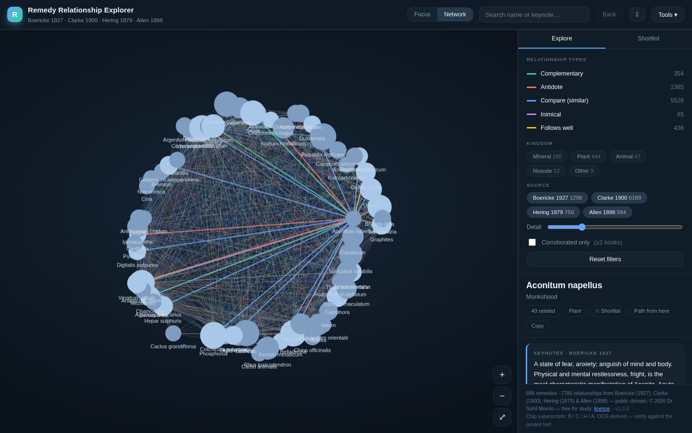
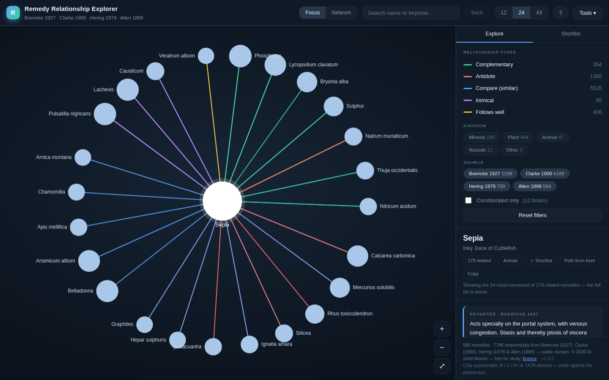
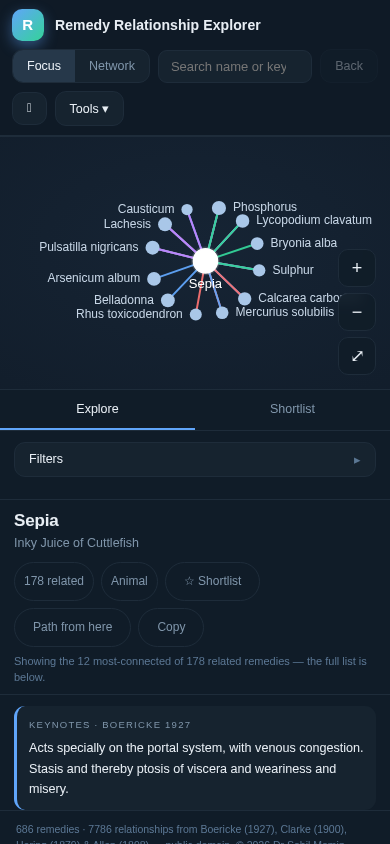
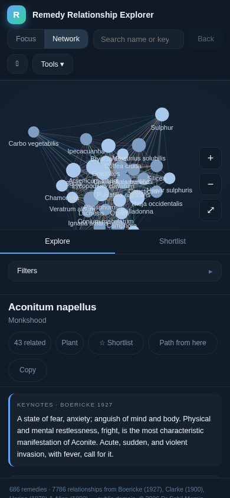

Homeopathic materia medica · graph explorer
An offline, single-file explorer for homeopathic remedy relationships — complementary, antidotal, inimical and “compare” links drawn as an interactive, zoomable graph.
Screenshots
Real captures of the running app, taken in a headless browser — not mockups.




Features
Everything below is stated in the project README. Nothing is bolted on, and nothing needs a server.
One remedy at a time, its relationships arranged in a ring, grouped and colour-coded by type. Click any remedy to re-centre; breadcrumbs retrace your path.
The most-connected remedies as a force-directed graph, with a detail slider and collision-aware layout so nodes never overlap.
A vocabulary of 686 remedies, each with its relationships resolved against abbreviations, synonyms and full names.
Complementary, antidotal, inimical, “follows well” and “compare” links, merged across every source and cross-referenced.
Relationships parsed from four public-domain materia medicas, each relationship carrying the source that asserts it.
The whole app — code and data — is a single HTML document. No build step, no API keys, no dependencies to install.
No server, no backend, no network access. Open the file and it works — on a laptop, a tablet or a phone, online or off.
Nothing to host, nothing to authenticate. Search, layout and storage all run in the browser; your notes stay on your device.
Data sources
Relationships were parsed from each book’s “Relations” sections, resolved against a remedy-name vocabulary, merged across sources and cross-referenced. Every relationship is tagged with the book that asserts it — B Boericke, C Clarke, H Hering, A Allen.
| Source | Author | Year | Licence |
|---|---|---|---|
| Pocket Manual of Homoeopathic Materia Medica | William Boericke | 1927 | Public domain |
| Dictionary of Practical Materia Medica | John Henry Clarke | 1900 | Public domain |
| Guiding Symptoms of Our Materia Medica | Constantine Hering | 1879 | Public domain |
| Keynotes and Characteristics with Comparisons | Henry C. Allen | 1898 | Public domain |
How it works
A short, offline pipeline — the same one described in the project’s data notes.
Live demo
Runs entirely on your device. No sign-in, no upload, no network needed once it has loaded.
A study and reference tool — not a diagnostic device. The dataset is OCR-derived from historical texts and may contain errors. It is not medical advice and must not be used to diagnose, treat or prescribe. Always verify against the printed sources and consult a qualified practitioner.